01.SPI-QSPI协议专题(1) - 基础协议特征介绍
[TOC]
前言
SPI/QSPI 协议接口是显示类、存储类、以及一些传感器设备的数据通信接口。
通过这个技术专题, 详细讲解 GR55xx 系列芯片 SPI/QSPI 协议、芯片模块的设计特点、软件接口的用法以及构建高效率的应用接口, 帮助用户快速的理解和发挥 SPI/QSPI 的高吞吐性能。
系列文章一般情况适用于 GR551x、GR5525、GR5526； 如果只适用于特定芯片, 会进行标注.
1. SPI协议
SPI是一种同步串行接口技术,是一种高速、全双工、同步通信总线,在芯片中只占用四根管脚用来控制及数据传输,广泛用于EEPROM、Flash、RTC（实时时钟）、ADC（数模转换器）、DSP（数字信号处理器）以及数字信号解码器上
1.1 引脚信号
SPI 协议定义了4根功能信号引脚:
SCK(Serial Clock)：SCK是串行时钟线,作用是Master向Slave传输时钟信号
MOSI(Master Out Slave in)：在SPI Master上也被称为Tx-channel,作用是SPI主机给SPI从机发送数据
CS/SS(Chip Select/Slave Select)：作用是SPI Master选择与哪一个SPI Slave通信,低电平表示从机被选中(低电平有效)
MISO(Master In Slave Out)：在SPI Master上也被称为Rx-channel,作用是SPI主机接收SPI从机传输过来的数据 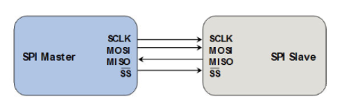
1.2 角色
SPI 协议中， 存在Master 和 Slave两类角色, 通信采用主从控制方式进行, 传输由Master 负责发起； Slave负责应答. 主从通信的典型的通信拓扑如下图: 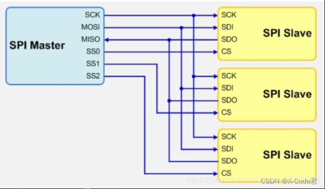
SPI协议规定Slave设备的clock由Master通过SCK管脚提供给Slave，Slave本身不能产生或控制clock，没有clock则Slave不能正常工作
SPI总线在传输数据的同时也传输了时钟信号，所以SPI协议是一种同步（Synchronous）传输协议。Master会根据将要交换的数据产生相应的时钟脉冲，组成时钟信号，时钟信号通过时钟极性(CPOL)和时钟相位(CPHA)控制两个SPI设备何时交换数据以及何时对接收数据进行采样，保证数据在两个设备之间是同步传输的
SPI总线协议是一种支持全双工的串行通信协议，数据传输时高位在前，低位在后 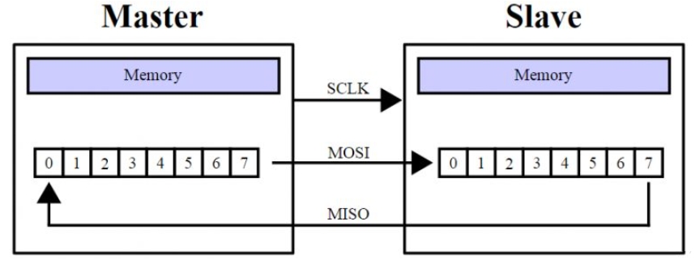
1.3 时钟频率
SPI 协议是一种由时钟信号驱动的协议, 当时钟频率固定时候, 起工作效率也被固定. 一般情况下, SPI Clock有系统的主频时钟或者外设时钟分频而来. Master / Slave 可能获取的最大工作频率并不相同
下表为 GR55xx 系列芯片SPI/QSPI 时钟频率表 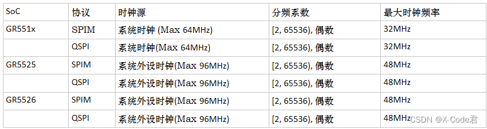
1.4 时钟模式
SPI协议定义了4种时钟模式，这4种模式分别由时钟极性(CPOL，Clock Polarity)和时钟相位(CPHA，Clock Phase)来组合而成.
CPOL参数规定了SCK时钟信号空闲状态的电平
CPHA规定了数据是在SCK时钟的上升沿被采样还是下降沿被采样 (第一个或第二个突变边沿采样)
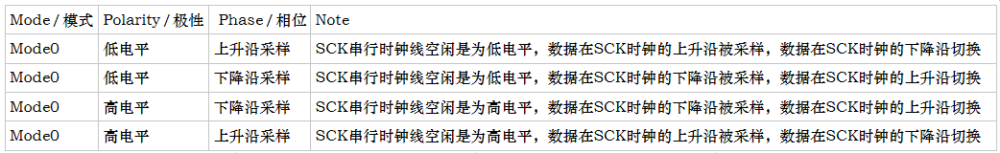 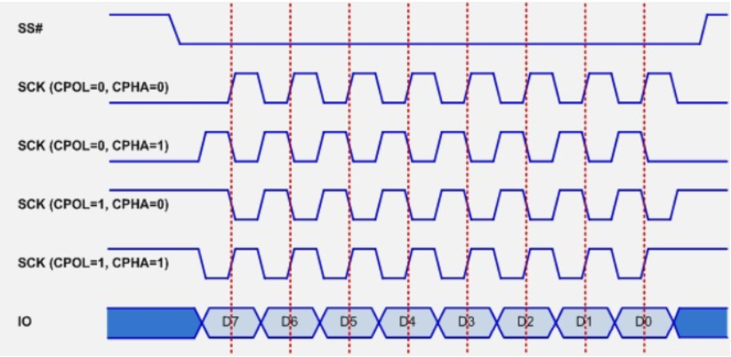 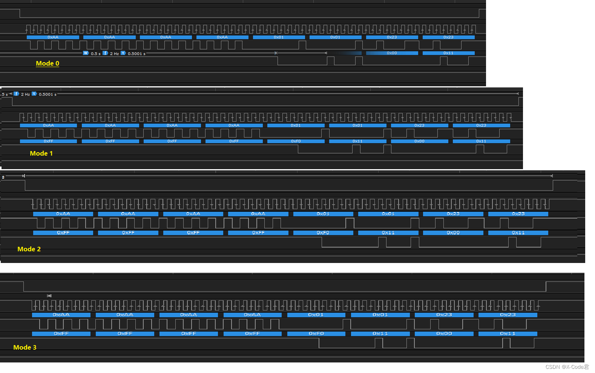
1.5 时序相位
SPI协议完整的时序构成为 : 指令 、地址、数据。而在一个功能化的时序中, 可以只包含其中的某些部分(地址不能独立存在)
典型的读操作时序

典型的写操作时序 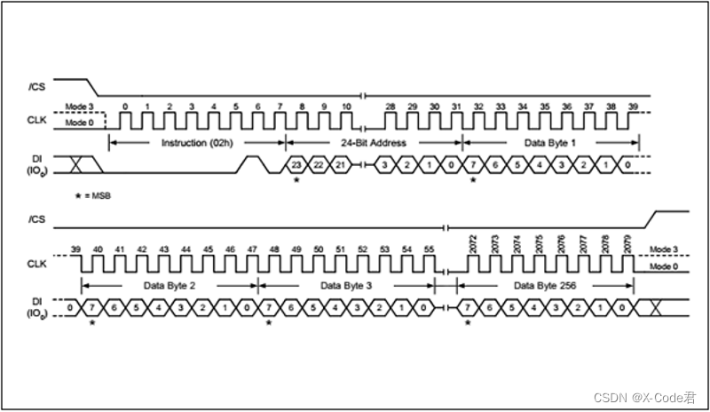
1.6 SPI 协议衍生时序
在SPI协议的基础上, 进行 数据I/O 或其他功能线的扩展, 衍生出众多的SPI 族时序.

2.QSPI 协议
2.1 概述
QSPI (QuadSPI)时序协议, 以及DSPI(Dual SPI), 基于SPI进行了扩展. 但CSn、Clock功能以及时钟模式、时钟频率等与时序协议与SPI 类似. 依然是同步、串行协议. 但其工作模式发生了些变化. 在DSPI/QSPI 模式下, 数据线不再是全双工模式
2.2 引脚信号
QSPI - Quad SPI协议, 数据线由 SPI 的 MOSI、MISO扩展为 IO0、IO1、IO2、IO3.
典型的电路接线图:
 常见的Flash 设备同时支持 SPI, Dual SPI, Quad SPI 工作模式, 再不同模式下, IO 具备不同能力.
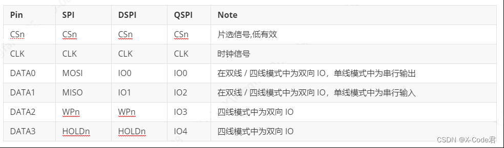
常见的Flash 设备同时支持 SPI, Dual SPI, Quad SPI 工作模式, 再不同模式下, IO 具备不同能力.
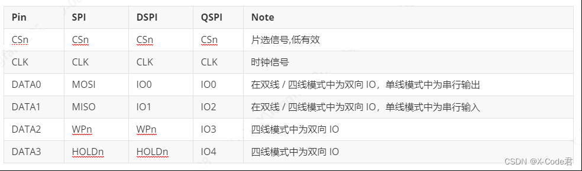
2.3 时序相位
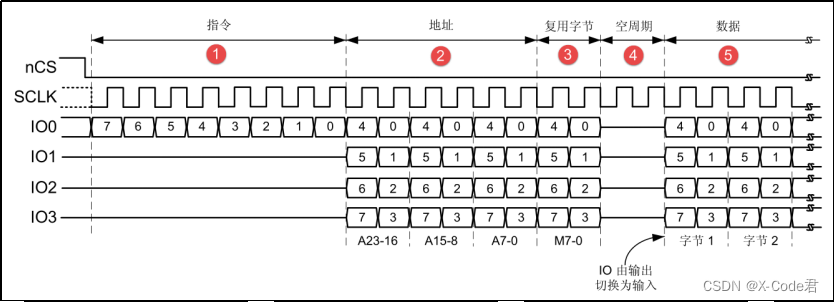
标准的QSPI 时序由5个如下相位部分构成
指令 : 进行控制行为的定义及识别
地址 : 拟操作的目标地址
Mode Bits : 模式位, 一般只存在 Nor Flash 设备中, 用于标注 是否支持SIOO 模式
Dummy Cycles : 等于Wait Cycles, 等待周期, 给予从设备的数据输出等待时间
DATA : 数据
2.4 指令地址模式
在QSPI 时序中, 指令地址存在如下几种发送方式: (注: 下面时序截图参考源自市面QSPI接口 Flash (PUYA)/PSRAM设备的Datasheet)
指令单线, 地址单线发送模式.
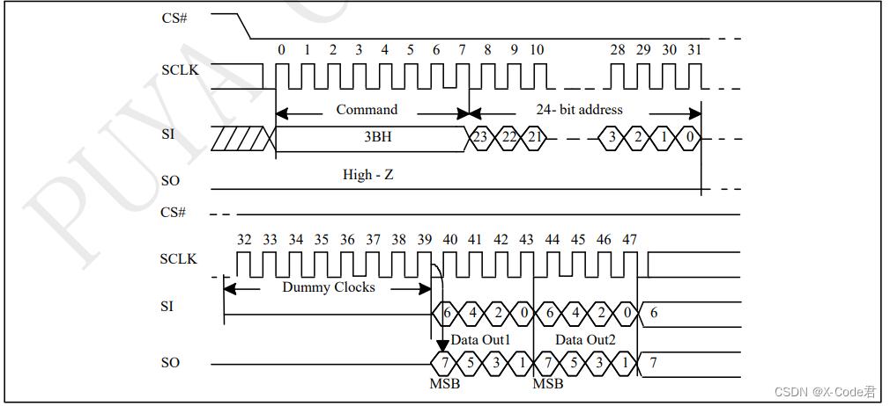指令单线, 地址多线发送模式.

指令多线, 地址多线发送模式. 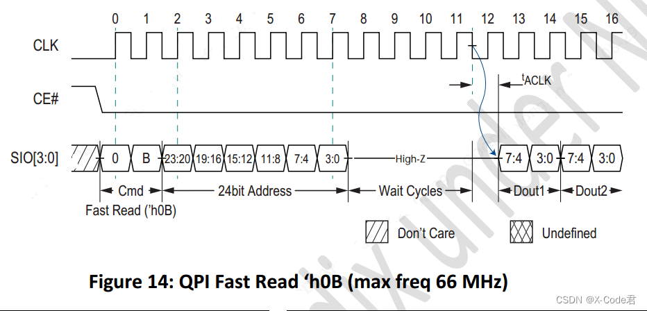
当地址通过多线发送时候, 后续相位也一定使用多线模式进行发送
2.5 QPI 模式
在QSPI 模式下, 当所有有效的相位均通过Quad 模式发送时, 将其称为 QPI 模式, QPI模式多见 QSPI PSRAM 设备. 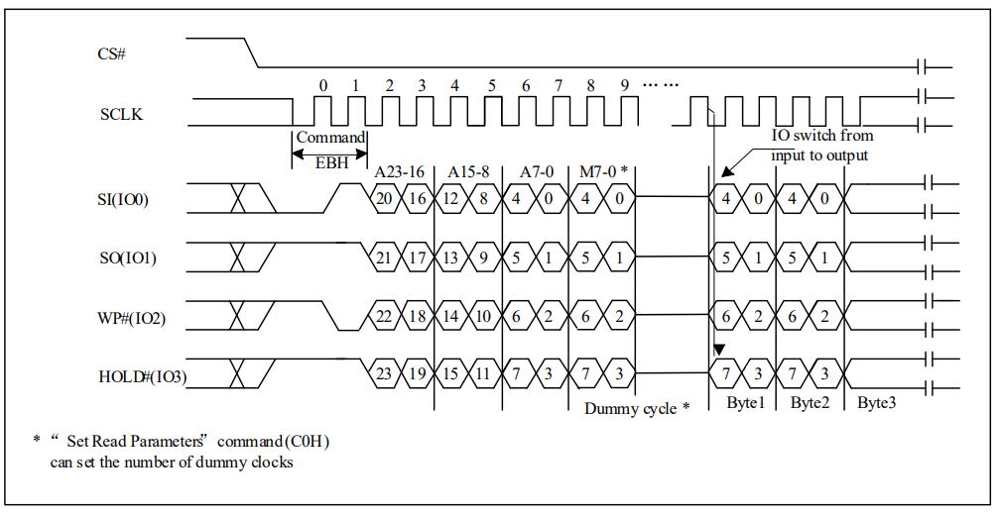
2.6 SIOO 模式
SIOO模式, Sent Instruction Only Once 模式.
常见于Nor Flash 的读命令, 需要Mode Bits 相位支持, 声明此模式后, 只需要在第一次访问时候, 在时序中包含 命令相位部分, 在后续的时序中, 不用再发送.直到 Mode Bits 状态发生变化 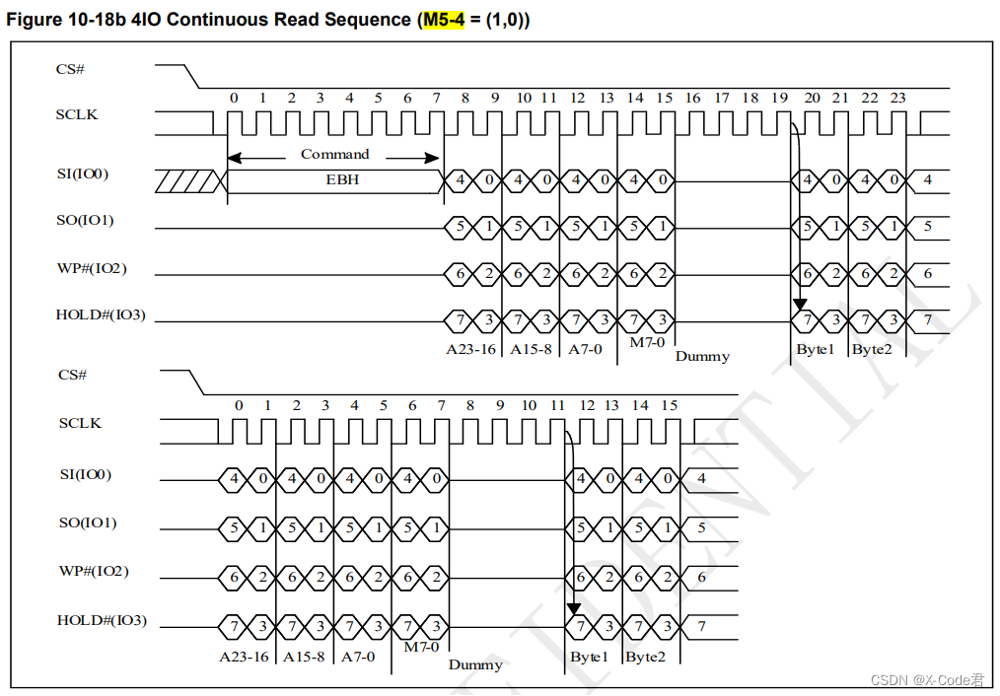
2.7 效率计算
DATA Phase 以外的Phase 都算作Overhead.
每次访问效率 = DATA Clock / Total Clock
附录
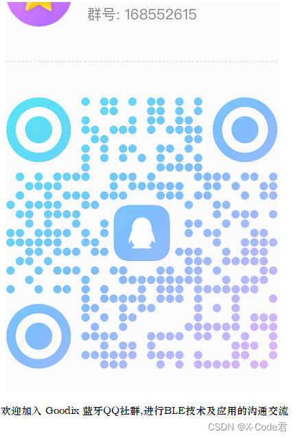